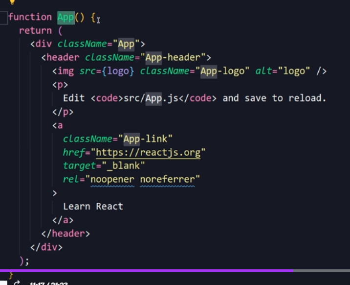

É uma ferramento do React para se iniciar um projeto do zero, e é uma forma de criar um projeto moderno com varios recursos recentes.
O react tem muitas coisas que seram escritas de forma q o navegador nao reconhece, e será usado o jsx q sera usado o tempo todo, e para que funcione normalmente será preciso instar as ferramentas para q se possa programar.
Para isso será instalado o create React app
Após tudo instalado foi criado varias pastas dentro da pasta do projeto, agora é explicar cada uma....
scripts do package.js importantes para se entrender.
Agora é testar o projeto para ve se esta tudo funcionando corretamente.
React é muito centrado em componentes, e os compoentes sao criados com a letra MAIUSCULA
Exemplo:
Lembrando que o react aceita somente o retorno de 1 elemento root que é consderado o que esta dentro dessa div principal, mas se caso queira colocar outro como uma forma de gambirra (Fragmento),
Lembrando se caso quira usar esse componente em outras paginas é so exportar, no final do codigo.